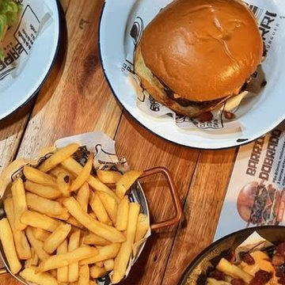

Delivery em Salvador • Burguer Artesanal
BATEU A FOME AÍ?
Peça Aqui!
Cardápio Digital • Delivery Direto
iFood
Peça pela nossa loja oficial
WhatsApp
Atendimento direto & dúvidas
Direto da Chapa
@barretosburguerssa
Barril Dobrado
Feito na Brasa

Combos & Fritas